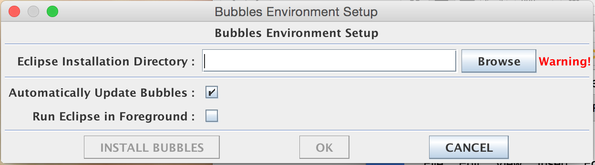
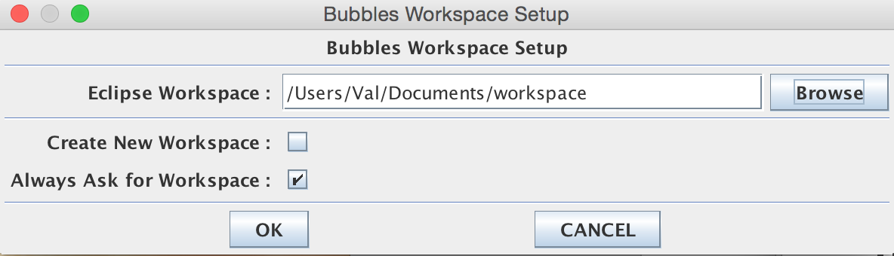
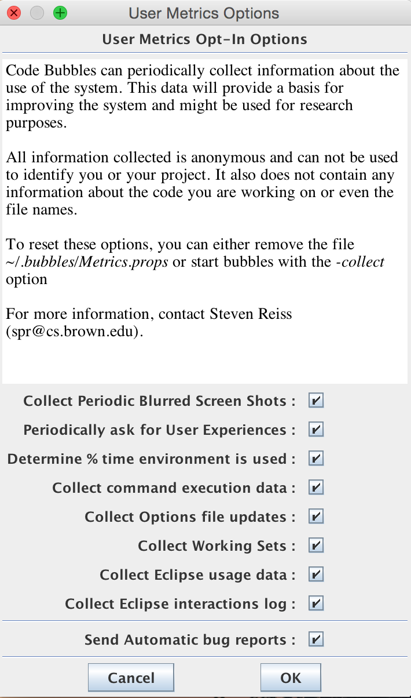
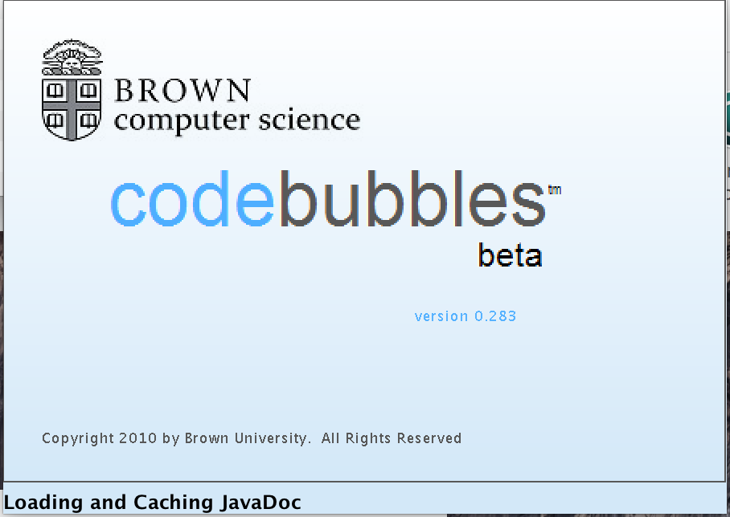
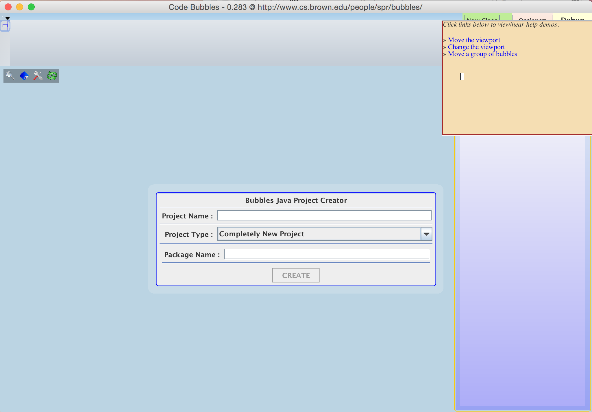

The current version of CodeBubbles is 0.283
CodeBubbles can be obtained by clicking here.
You must have Java SE Development Kit 7 installed for Code Bubbles to work properly. If you are not running Java 7, download and install it HERE.
Eclipse 4.X is recommended but not necessarily required. Code Bubbles has been tested in Eclipse 3.5 and later.
1. Download bubbles.jar HERE.
We recommend moving bubbles.jar to its own directory. Bubbles.jar downloads additional essential folders into its directory. These folders store javadocs, configuration settings, and more.
2. Run Bubbles.jar. The Bubbles Environment Setup will pop up.
Bubbles.jar can be run by double clicking it. If you get a "main class not found" error, run the jar in terminal or command line by navigating to the folder it is in and typing java -jar bubbles.jar.
If you are having trouble getting Bubbles.jar to run, double check that your Java version is correct.
3. Click Browse and select your Eclipse installation directory.
Choosing to 'Automatically Update Bubbles' will cause Code Bubbles to check for updates each time it starts up. There is currently no manual update option, but you can get around this by reloading the bubbles.jar file. Reloading the file will configure the new .jar file automatically.
'Run Eclipse in Foreground' will start up both Eclipse and Code Bubbles, should you wish to go back and forth between the two. This is not a recommended setting as it is not fully tested. In addition, we strive to make Code Bubbles its own stand-alone environment that has all of Eclipse's features.
4. Click Install Bubbles.
5. Click Ok. The Bubbles Workspace Setup will pop up.
6. Click Browse. Select your Eclipse Workspace.
If you have not set up a workspace in Eclipse or you wish to create a new workspace, you can select 'Create New Workspace' and point the Eclipse Workspace to the location that you want the new workspace to go.
'Always Ask for Workspace' will stop Workspace Setup from appearing when you open Code Bubbles in the future. If you wish to make this your default workspace, check this option.
7. Click Ok. User Metrics Options will pop up.
8. Select which User Metrics you wish to opt in to sending.
Sending user metrics helps the developers to see how Code Bubbles is used and how it can be improved. The collected metrics contain no proprietary information. We recommend at least enabling automatic bug reports.
9. Click Ok. Code Bubbles will start up.
It may take a while for Code Bubbles to start up. It must load Eclipse and symbol tables for your projects. The first time it starts, it must cache JavaDoc information from the web. This can take several minutes depending on the speed of your internet connection.
Congratulations, you have successfully started Code Bubbles!
